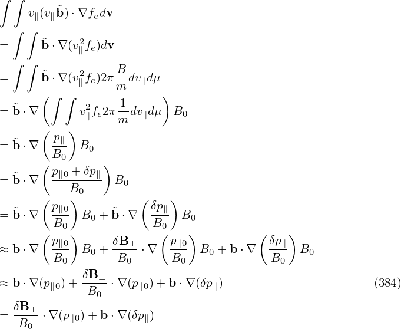

The gyrokinetic equation given above is written in terms of variables (X,μ,𝜀,α). Next, we transform it into coordinates (X′,μ′,v∥,α′) which are defined by
|
| (369) |
Use this definition and the chain rule, we obtain
and
![[ ]
∂- -∂-- ∂B0-∂δG0-
∂t + (v∥e∥ + VD + δVD )⋅∂X ′ δG0 − e∥ ⋅μ ∂X ∂v∥
( ∂F ) ( ∂B q∂ ⟨δL ⟩ ) ∂F 1
= − δVD ⋅ --0′ + δVD ⋅μ---0− -------α --0--, (373)
∂X ∂X m ∂t ∂v∥v∥](nonlinear_gyrokinetic_equation435x.png)
Note that the gyro-averaging operator in (X′,μ′,v∥,α′) coordinates is identical to that in the old coordinates since the perpendicular velocity variable μ is identical between the two coordinate systems. Also note that the perturbed guiding-center velocity δVD is given by
 | (374) |
where ∂∕∂X (rather than ∂∕∂X′) is used. Since δϕ(x) = δϕg(X,μ′,α′), which is independent of v∥, then Eq. (370) indicates that ∂δϕ∕∂X = ∂δϕ∕∂X′.
Following the same procedures, equation (141) in terms of (X′,μ′,v∥,α′) is written as
next, try to recover the equation in Mishchenk’s paper:![[ ]
∂-+ (v e + V + δV )⋅-∂-- δf − e ⋅μ∇B ∂δf-
∂t ∥ ∥ D D ∂X ′ ∥ 0∂v∥
( ∂F0) ∂F0 1
= − δVD ⋅ ∂X-′ + δVD ⋅μ ∇B0 ∂v-v-
[ ( ∥ ∥ ) ]
− q- − ∂⟨δA∥⟩α − e∥ + VD-+ ⟨δB⊥-⟩α- ⋅∇X ⟨δϕ⟩α ∂F0.
m ∂t v∥ B0 ∂v∥](nonlinear_gyrokinetic_equation438x.png)
|
| (376) |
−![[ ( ) ]
− ∂⟨δA-∥⟩α-− e + VD--+ q-∇ ⟨A ⟩ × e∥ ⋅∇ ⟨δϕ⟩
∂t ∥ v∥ m X ∥α Ω X α](nonlinear_gyrokinetic_equation441x.png)  . .
|
− ![[ ]
∂⟨δA ∥(h)⟩α ( VD q e∥)
− ---∂t----− -v--+ m-∇X ⟨A ∥⟩α × Ω- ⋅∇X ⟨δϕ⟩α
∥](nonlinear_gyrokinetic_equation444x.png)  . .
|
The guiding-center velocity in the equilibrium field is given by
 | (377) |
where
 | (378) |
 | (379) |
Using B∥0⋆ ≈ B0, then expression (377) is written as
 | (380) |
where the curvature drift, ∇B drift, and E0 × B0 drift can be identified. Note that the perturbed guiding-center velocity δVD is given by (refer to Sec. C.3)
 | (381) |
Using the above results, equation (375) is written as
![[ ]
∂-+ (v e + V + δV )⋅ -∂--δf − e ⋅μ∇B ∂δf-
∂t ∥ ∥ D D ∂X′ ∥ 0∂v ∥
( ∂F0 ) ( e∥ × ∇X ⟨δϕ⟩α ⟨δB ⊥⟩α) ( μ ∂F0 )
= − δVD ⋅ ∂X-′ + -----B------+ v∥--B---- ⋅ v-∇B0 -∂v-
[ ( 02 0 ∥ ∥ ) ]
-q ∂⟨v-⋅δA⟩α v∥ -μ-- -1- ⟨δB-⊥⟩α ∂F0-1
−m − ∂t − v∥e∥ + Ω ∇ ×b + ΩB0 B0 × ∇B0 + B20E0 × B0 + v∥ B0 ⋅∇X ⟨δϕ⟩α ∂v(∥3v8∥2,)](nonlinear_gyrokinetic_equation451x.png)

![[ ]
∂-+ (v∥e∥ + VD +δVD ) ⋅-∂-- δG0 − (v∥e∥ + VD + δVD )⋅ μ-∂B0-∂δG0-
∂t ( ∂X′) v∥∂X ∂v∥
∂F0- -μ ∂B0∂F0- q-∂⟨δL⟩α∂F0-1-
= − δVD ⋅ ∂X ′ − v∥ ∂X ∂v∥ − m ∂t ∂v∥ v∥, (372)](nonlinear_gyrokinetic_equation434x.png)
![[ ]
∂-+ (v e + V +δV ) ⋅-∂-- δf − e ⋅μ∇B ∂δf-
∂t ∥ ∥ D D ∂X ′ ∥ 0 ∂v∥
(∂F0 ) ∂F0 1
= − δVD ⋅ ∂X-′ +δVD ⋅μ∇B0 ∂v--v-
[ ( ∥ ∥ ) ]
−-q − ∂⟨v-⋅δA⟩α − v∥e∥ + VD + v∥ ⟨δB-⊥⟩α- ⋅∇X ⟨δϕ⟩α ∂F0-1-. (375)
m ∂t B0 ∂v∥ v∥](nonlinear_gyrokinetic_equation437x.png)